🪵 Материалы
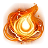
Абсолютная душа ПалаЛегендарный · вес 0,2
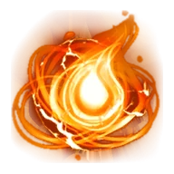
Абсолютная душа Пала
Душа, оставленная закалённым в боях Палом. Принеси её в дар Монумент Силы, чтобы пробудить скрытые способности.
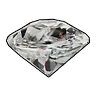
АлмазЭпический · вес 5
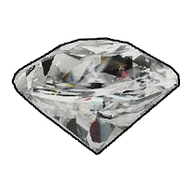
Алмаз
Редкий драгоценный камень, излучающий яркое сияние. Можно продать торговцу по высокой цене.
 Бант Риббанивес 0,2
Бант Риббанивес 0,2
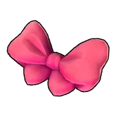
Бант Риббани
Бант, выпавший с пала «Риббани». Благодаря милому цвету и дизайну используется как материал для одежды.
 Биобатареявес 5
Биобатареявес 5
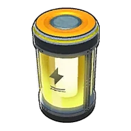
Биобатарея
Устройство, накапливающее биологическую энергию в виде электричества. Используется в оборудовании с высокими требованиями к энергоёмкости. Создаётся на станцию «Конвейерная фабрика II»
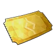
Боевой билетЭпический
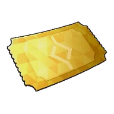
Боевой билет
Можно получить за победу в одиночном бою на арене. Можно обменять на премиальные награды.
 Большая душа ПалаЭпический · вес 0,2
Большая душа ПалаЭпический · вес 0,2
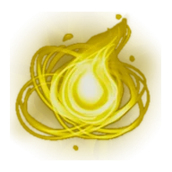
Большая душа Пала
Душа, оставшаяся после большого Пала. Поднесите её в дар Монумент Силы, чтобы раскрыть скрытые способности.
 Большое зловещее яйцоРедкий · вес 25
Большое зловещее яйцоРедкий · вес 25

Большое зловещее яйцо
Большое зловещее яйцо. Таинственное яйцо, в котором заключена энергия Мирового Древа. Поместите яйцо в Инкубатор для выведения.
 Большое мутировавшее яйцоРедкий · вес 25
Большое мутировавшее яйцоРедкий · вес 25
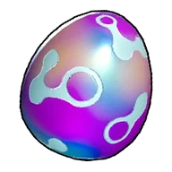
Большое мутировавшее яйцо
Большое мутировавшее яйцо. Крайне редкое яйцо, прошедшее особую мутацию. Поместите яйцо в Инкубатор для выведения.
 Большое обычное яйцоРедкий · вес 25
Большое обычное яйцоРедкий · вес 25

Большое обычное яйцо
Большое обычное яйцо. Внутри ощущается спокойный, размеренный пульс. Поместите яйцо в Инкубатор для выведения.
 Большое раскалённое яйцоРедкий · вес 25
Большое раскалённое яйцоРедкий · вес 25
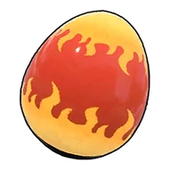
Большое раскалённое яйцо
Большое раскалённое яйцо. Внутри ощущается мощный, пылкий ритм. Поместите яйцо в Инкубатор для выведения.
 Большое яйцо водыРедкий · вес 25
Большое яйцо водыРедкий · вес 25
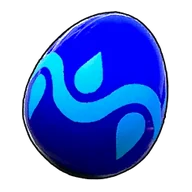
Большое яйцо воды
Большое яйцо воды. Внутри ощущается чистая и спокойная пульсация. Поместите яйцо в Инкубатор для выведения.
 Большое яйцо драконаРедкий · вес 25
Большое яйцо драконаРедкий · вес 25

Большое яйцо дракона
Большое яйцо дракона. Внутри ощущается аномальный пульс. Поместите яйцо в Инкубатор для выведения.
 Большое яйцо землиРедкий · вес 25
Большое яйцо землиРедкий · вес 25
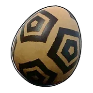
Большое яйцо земли
Большое яйцо земли. Чувствуется спокойный и мощный ритм внутри. Поместите яйцо в Инкубатор для выведения.
 Большое яйцо молнииРедкий · вес 25
Большое яйцо молнииРедкий · вес 25

Большое яйцо молнии
Большое яйцо молнии. Внутри ощущается мощный энергетический пульс. Поместите яйцо в Инкубатор для выведения.
 Большое яйцо свежей листвыРедкий · вес 25
Большое яйцо свежей листвыРедкий · вес 25

Большое яйцо свежей листвы
Большое яйцо свежей листвы. Внутри ощущается пульсация, полная жизненной энергии. Поместите яйцо в Инкубатор для выведения.
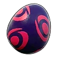
Большое яйцо тьмыРедкий · вес 25

Большое яйцо тьмы
Большое яйцо тьмы. Внутри ощущается зловещий ритм. Поместите яйцо в Инкубатор для выведения.
 Ветхий пергаментРедкий · вес 0,1
Ветхий пергаментРедкий · вес 0,1
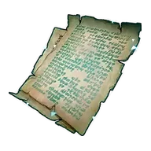
Ветхий пергамент
Древний текст, написанный на коже Пала. Иногда Палы находят его во время экспедиций. Необходим для проведения исследований.
 Взрывоустойчивое волокноЛегендарный · вес 1
Взрывоустойчивое волокноЛегендарный · вес 1
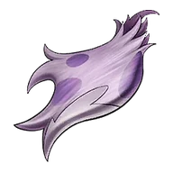
Взрывоустойчивое волокно
Волокно с тела Сильванс. Смягчает ударную волну взрывов.
 Водный самоцветРедкий · вес 1
Водный самоцветРедкий · вес 1
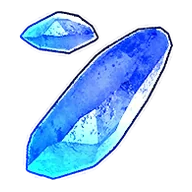
Водный самоцвет
Камень, образованный из энергии Мирового Древа, накопленной в теле Пала. После обработки становится предметом, раскрывающим скрытый потенциал Пала Вода.
 Волокновес 0,5
Волокновес 0,5
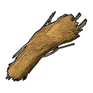
Волокно
Волокно, добываемое из дерева. Используется для создания луков и других предметов. Также можно получить, переработав материал «Древесина» в станцию «Дробилка».
 Волосы Катрессавес 0,2
Волосы Катрессавес 0,2
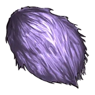
Волосы Катресса
Волосы, выпавшие с пала «Катресс». Мягкие на ощупь, используются как материал для одежды и других нужд.
 Волосы Свивес 0,2
Волосы Свивес 0,2
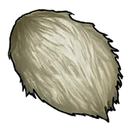
Волосы Сви
Волосы, выпавшие с пала «Сви». Мягкий и пушистый, используется как материал для одежды.
 Гвоздьвес 2
Гвоздьвес 2
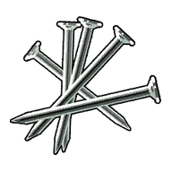
Гвоздь
Деталь, необходимая для создания многих построек.
 Гексокварцвес 2
Гексокварцвес 2
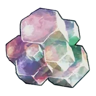
Гексокварц
Ценный кристалл, встречающийся только в землях Тэнраку. За долгие годы палдиум уплотнился и изменился, приобретя радужное сияние.
 Гексолитвес 1
Гексолитвес 1
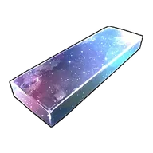
Гексолит
Сплав из материалов «Хромаит» и «Гексокварц». Используется для создания продвинутого снаряжения и построек. Выплавляется в печи.
 Гребень Лизпанкавес 0,2
Гребень Лизпанкавес 0,2
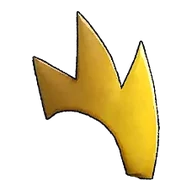
Гребень Лизпанка
Гребень, выпавший с пала «Лизпанк». Колючий материал, используемый для изготовления одежды.
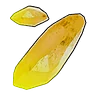
Грозовой самоцветРедкий · вес 1
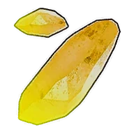
Грозовой самоцвет
Камень, образованный из энергии Мирового Древа, накопленной в теле Пала. После обработки становится предметом, раскрывающим скрытый потенциал Пала Молния.
 Деревянная доскавес 2
Деревянная доскавес 2
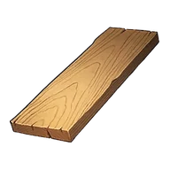
Деревянная доска
Доски из обработанной древесины. Универсальнее обычных брёвен и имеют множество способов применения.
 Деталь древней цивилизацииРедкий · вес 1
Деталь древней цивилизацииРедкий · вес 1
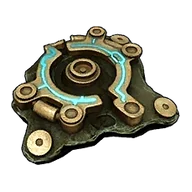
Деталь древней цивилизации
Старый предмет, обнаруженный в древних руинах. Кладезь утерянных технологий. Многие желают обладать этой невероятно ценной вещицей.
 Доказательство ликвидацииЭпический
Доказательство ликвидацииЭпический
Доказательство ликвидации
Доказательство убийства разыскиваемой цели. Отдайте его вигилантам в городах и поселениях, чтобы получить награду.
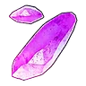
Драконий самоцветРедкий · вес 1
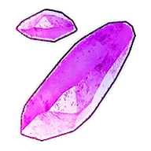
Драконий самоцвет
Камень, образованный из энергии Мирового Древа, накопленной в теле Пала. После обработки становится предметом, раскрывающим скрытый потенциал Пала Дракон.
 Древесинавес 3
Древесинавес 3
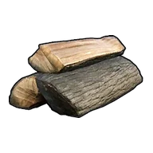
Древесина
Материал для строительства и создания предметов. В основном добывается при рубке деревьев. Можно переработать в материал «Волокно» с помощью станции «Дробилка».
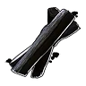
Древесный угольвес 2
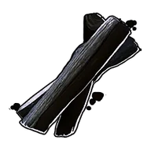
Древесный уголь
Древесный уголь образуется при сжигании материала «Древесина». В сочетании с материалом «Сера» используется для создания материала «Порох».
 Древний кусок лавыНеобычный · вес 8
Древний кусок лавыНеобычный · вес 8
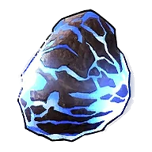
Древний кусок лавы
Сгусток лавы, сформировавшаяся за долгие годы в экстремальных условиях. Заключённая внутри синяя лава всё ещё излучает тепло.
 Древняя кораНеобычный · вес 5
Древняя кораНеобычный · вес 5
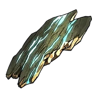
Древняя кора
Кора дерева, прожившего долгие годы в экстремальных условиях. Даже тонкий слой этой коры излучает безграничную жизненную силу.
 Древняя костьНеобычный · вес 8
Древняя костьНеобычный · вес 8
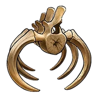
Древняя кость
Кость зверя, выветренные за долгие годы в экстремальных условиях. Даже лишённые плоти, они сохраняют мощное ощущение присутствия.
 Едкий растворительвес 3
Едкий растворительвес 3
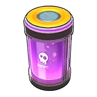
Едкий растворитель
Опасный химический растворитель, обладающим мощным эффектом расщепления. Используется для точной обработки и особой утилизации.
 Жидкость водного Палавес 0,2
Жидкость водного Палавес 0,2
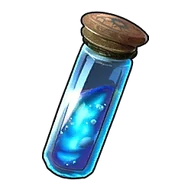
Жидкость водного Пала
Жидкость, получаемая из водных Палов. Густая и полезная в использовании.
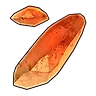
Земной самоцветРедкий · вес 1
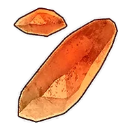
Земной самоцвет
Камень, образованный из энергии Мирового Древа, накопленной в теле Пала. После обработки становится предметом, раскрывающим скрытый потенциал Пала Земля.
 Зловещее яйцовес 10
Зловещее яйцовес 10

Зловещее яйцо
Зловещее яйцо. Таинственное яйцо, в котором заключена энергия Мирового Древа. Поместите яйцо в Инкубатор для выведения.
 Золотая монета
Золотая монета
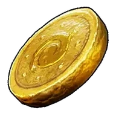
Золотая монета
Валюта, используемая на острове Палпагос. Можно обменивать у торговцев на предметы и Палов.
 ИзумрудРедкий · вес 5
ИзумрудРедкий · вес 5
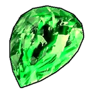
Изумруд
Драгоценный камень, излучающий зеленое сияние. Можно продать торговцу по высокой цене.
 Каменьвес 3
Каменьвес 3
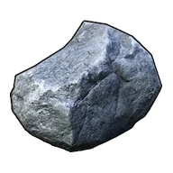
Камень
Материал для строительства и создания предметов. Можно получить при добыче камня.
 Качественная деревянная доскаРедкий · вес 3
Качественная деревянная доскаРедкий · вес 3
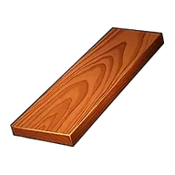
Качественная деревянная доска
Доски, тщательно изготовленные из материала «Твёрдая древесина». Обладают красивой текстурой дерева и используются в роскошных сооружениях.
 Качественная тканьНеобычный · вес 1
Качественная тканьНеобычный · вес 1

Качественная ткань
Качественная ткань из большого количества материала «Шерсть». Необходима для создания качественного снаряжения.
 Качественное масло Палавес 0,2
Качественное масло Палавес 0,2
Качественное масло Пала
Качественное масло, получаемое из Палов. Используется для создания: Полимер.
 Кожавес 2
Кожавес 2
Кожа
Кожа - можно получить с некоторых Палов. Используется как материал для изготовления снаряжения.
 Компьютервес 5
Компьютервес 5
Компьютер
Используется для управления автоматизированным оборудованием и сложными механизмами. Ключевой компонент современных технологий.
 Кораллиновая рудавес 3
Кораллиновая рудавес 3
Кораллиновая руда
Редкая руда, долго формировавшаяся в морских глубинах. Можно выловить в глубоком море с помощью магнита и удочки.
 Кораллиновый слитоквес 3
Кораллиновый слитоквес 3
Кораллиновый слиток
Сплав из материала «Кораллиновая руда», покоящейся на морском дне. Обладает высокой энергопрочностью и используется для изготовления оружия и других предметов. Выплавляется в печи.
 Костьвес 1
Костьвес 1
Кость
Кость добывается с Палов. Является хорошим источником кальция.
Красивые артефакты древн. цив.Редкий · вес 1
Красивые артефакты древн. цив.
Обломок сооружений и инструментов древней цивилизации. Хорошо сохранился, внутри ощущается поток энергии.
 Красивый цветоквес 0,2
Красивый цветоквес 0,2
Красивый цветок
Растение с яркими цветами. Используется для изготовления материалов «Подозрительный сок» и «Странный сок».
 Криогенный хладагентвес 3
Криогенный хладагентвес 3
Криогенный хладагент
Высокоэффективная охлаждающая среда, использующая особые компоненты, полученные от Палов. Применяется для контроля температуры высокомощных устройств.
 Ледяной органвес 0,5
Ледяной органвес 0,5
Ледяной орган
Материал, получаемый от Палов с элементом Лёд. Используется для изготовления Замораживающая мина и других предметов.
 Ледяной самоцветРедкий · вес 1
Ледяной самоцветРедкий · вес 1
Ледяной самоцвет
Камень, образованный из энергии Мирового Древа, накопленной в теле Пала. После обработки становится предметом, раскрывающим скрытый потенциал Пала Лёд.
 Лист Гумоссавес 0,2
Лист Гумоссавес 0,2
Лист Гумосса
Лист, выпавший с пала «Гумосс». Обладает свежестью и сочностью, используется как материал для одежды.
 Лотос выносливости (большой)Эпический · вес 0,1
Лотос выносливости (большой)Эпический · вес 0,1
Лотос выносливости (большой)
Крайне редкий большой жёлтый цветок. Служит ингредиентом для чудесного снадобья выносливости.
Лотос выносливости (малый)Редкий · вес 0,1
Лотос выносливости (малый)
Крайне редкий маленький жёлтый цветок. Служит ингредиентом для тайного снадобья выносливости.
 Лотос жизни (большой)Эпический · вес 0,1
Лотос жизни (большой)Эпический · вес 0,1
Лотос жизни (большой)
Крайне редкий большой зелёный цветок. Служит ингредиентом для чудесного снадобья жизненной силы.
 Лотос жизни (малый)Редкий · вес 0,1
Лотос жизни (малый)Редкий · вес 0,1
Лотос жизни (малый)
Крайне редкий маленький зелёный цветок. Служит ингредиентом для тайного снадобья жизненной силы.
 Лотос переносимости (большой)Эпический · вес 0,1
Лотос переносимости (большой)Эпический · вес 0,1
Лотос переносимости (большой)
Крайне редкий большой фиолетовый цветок. Служит ингредиентом для чудесного снадобья гиганта.
Лотос переносимости (малый)Редкий · вес 0,1
Лотос переносимости (малый)
Крайне редкий маленький фиолетовый цветок. Служит ингредиентом для тайного снадобья гиганта.
Лотос силы (большой)Эпический · вес 0,1
Лотос силы (большой)
Крайне редкий большой красный цветок. Служит ингредиентом для чудесного снадобья яростной атаки.
 Лотос силы (малый)Редкий · вес 0,1
Лотос силы (малый)Редкий · вес 0,1
Лотос силы (малый)
Крайне редкий маленький красный цветок. Служит ингредиентом для тайного снадобья яростной атаки.
Лотос скорости (большой)Эпический · вес 0,1
Лотос скорости (большой)
Крайне редкий большой оранжевый цветок. Служит ингредиентом для чудесного снадобья труда.
 Лотос скорости (малый)Редкий · вес 0,1
Лотос скорости (малый)Редкий · вес 0,1
Лотос скорости (малый)
Крайне редкий маленький оранжевый цветок. Служит ингредиентом для тайного снадобья труда.
Маленькая душа ПалаНеобычный · вес 0,1
Маленькая душа Пала
Душа, оставшаяся после маленького Пала. Поднесите её в дар Монумент Силы, чтобы раскрыть скрытые способности.
 Мембрана нейтрализации ядаЛегендарный · вес 1
Мембрана нейтрализации ядаЛегендарный · вес 1
Мембрана нейтрализации яда
Орган Дандилорд, защищающий его от собственного коррозионного тумана. Фильтрует и нейтрализует его.
 Металлическая рудавес 8
Металлическая рудавес 8
Металлическая руда
При выплавке в печи превращается в слиток. Встречается в пещерах и других местах.
 Металлический слитоквес 5
Металлический слитоквес 5
Металлический слиток
Материал для изготовления металлического оружия и брони. Можно получить, переплавив в печи Металлическая руда.
 Мутировавшее яйцовес 10
Мутировавшее яйцовес 10

Мутировавшее яйцо
Мутировавшее яйцо. Крайне редкое яйцо, прошедшее особую мутацию. Поместите яйцо в Инкубатор для выведения.
 Нейтральный самоцветРедкий · вес 1
Нейтральный самоцветРедкий · вес 1
Нейтральный самоцвет
Камень, образованный из энергии Мирового Древа, накопленной в теле Пала. После обработки становится предметом, раскрывающим скрытый потенциал Пала Нейтральный.
 Ночная звёздная пыльвес 1
Ночная звёздная пыльвес 1
Ночная звёздная пыль
Песок, собираемый ночью в пустыне. Служит материалом для создания некоторых аксессуаров и других предметов.
 Облако Даззивес 0,2
Облако Даззивес 0,2
Облако Даззи
Облако, выпавшее с пала «Даззи». Пушистый и объёмный материал, используемый для изготовления одежды.
 Обломок метеоритавес 3
Обломок метеоритавес 3
Обломок метеорита
Осколок камня, упавший с неба. Внутри содержится большое количество ресурса Осколок палдиума. Для извлечения используйте ｢Дробилка｣.
 Обычное яйцовес 10
Обычное яйцовес 10
Обычное яйцо
Обычное яйцо. Внутри ощущается нежное шевеление. Поместите яйцо в Инкубатор для выведения.
 Огненный органвес 0,5
Огненный органвес 0,5
Огненный орган
Материал, добываемый из Палов (Огонь). Из него изготавливаются такие предметы, как Огненная стрела.
Огненный самоцветРедкий · вес 1
Огненный самоцвет
Камень, образованный из энергии Мирового Древа, накопленной в теле Пала. После обработки становится предметом, раскрывающим скрытый потенциал Пала Огонь.
 Огромное зловещее яйцоЛегендарный · вес 50
Огромное зловещее яйцоЛегендарный · вес 50
Огромное зловещее яйцо
Огромное зловещее яйцо. Таинственное яйцо, в котором заключена энергия Мирового Древа. Поместите яйцо в Инкубатор для выведения.
 Огромное обычное яйцоЛегендарный · вес 50
Огромное обычное яйцоЛегендарный · вес 50

Огромное обычное яйцо
Огромное обычное яйцо. Внутри ощущается биение души, исполненной милосердия. Похоже, на свет вот-вот появится чудовище. Поместите яйцо в Инкубатор для выведения.
 Огромное раскалённое яйцоЛегендарный · вес 50
Огромное раскалённое яйцоЛегендарный · вес 50

Огромное раскалённое яйцо
Огромное раскалённое яйцо. Внутри ощущается биение пылающей души. Похоже, на свет вот-вот появится чудовище. Поместите яйцо в Инкубатор для выведения.
 Огромное яйцо водыЛегендарный · вес 50
Огромное яйцо водыЛегендарный · вес 50

Огромное яйцо воды
Огромное яйцо воды. Внутри ощущается биение чистой души. Похоже, на свет вот-вот появится чудовище. Поместите яйцо в Инкубатор для выведения.
 Огромное яйцо драконаЛегендарный · вес 50
Огромное яйцо драконаЛегендарный · вес 50
Огромное яйцо дракона
Огромное яйцо дракона. Внутри ощущается биение величественной души. Похоже, на свет вот-вот появится чудовище. Поместите яйцо в Инкубатор для выведения.
 Огромное яйцо землиЛегендарный · вес 50
Огромное яйцо землиЛегендарный · вес 50

Огромное яйцо земли
Огромное яйцо земли. Внутри ощущается биение души земли. Похоже, на свет вот-вот появится чудовище. Поместите яйцо в Инкубатор для выведения.
 Огромное яйцо молнииЛегендарный · вес 50
Огромное яйцо молнииЛегендарный · вес 50

Огромное яйцо молнии
Огромное яйцо молнии. Внутри ощущается бурное биение неистовой души. Похоже, на свет вот-вот появится чудовище. Поместите яйцо в Инкубатор для выведения.
Огромное яйцо свежей листвыЛегендарный · вес 50
Огромное яйцо свежей листвы
Огромное яйцо свежей листвы. Внутри ощущается биение души глубокого зелёного цвета. Похоже, на свет вот-вот появится чудовище. Поместите яйцо в Инкубатор для выведения.
 Огромное яйцо тьмыЛегендарный · вес 50
Огромное яйцо тьмыЛегендарный · вес 50
Огромное яйцо тьмы
Огромное яйцо тьмы. Внутри ощущается биение души бездны. Похоже, на свет вот-вот появится чудовище. Поместите яйцо в Инкубатор для выведения.
 Осколок палдиумавес 1
Осколок палдиумавес 1
Осколок палдиума
Кристаллизованная энергия Мирового Древа. Используется для создания сверхъестественных предметов и сооружений.
 Осколок тьмывес 0,2
Осколок тьмывес 0,2
Осколок тьмы
Получается с некоторых сильных Палов с элементом Тьма. Материал для создания мощных аксессуаров и других вещей.
Палкзитвес 5
Палкзит
Кристалл, образованный за долгие эпохи из утёкшей энергии Мирового Древа. Тот, кто лишён благословения, при прикосновении мгновенно покроется ржавчиной и обратится в прах. Лишь тот, кто способен обуздать его хрупкую природу, может достичь вершины древних технологий.
 Палкизитовый слитоквес 3
Палкизитовый слитоквес 3
Палкизитовый слиток
Сплав высочайшего качества, полученный из материалов «Соллайт» и «Палкзит». Чрезвычайно редкий материал, в котором кристаллизованы технологии древней цивилизации и сила Мирового Древа. Незаменим для создания снаряжения и сооружений высшего уровня.
 Перо Пенкингавес 0,2
Перо Пенкингавес 0,2
Перо Пенкинга
Перо, выпавшее с пала «Пенкинг». Отличается яркой окраской и используется как материал для одежды.
 Перо Токотоковес 0,2
Перо Токотоковес 0,2
Перо Токотоко
Перо, выпавшее с пала «Токотоко». Благодаря красивой окраске пользуется популярностью и используется как материал для одежды.
 Печатная платаНеобычный · вес 2
Печатная платаНеобычный · вес 2
Печатная плата
Печатная плата — необходимый компонент для изготовления точного оборудования.
 Полимервес 0,5
Полимервес 0,5
Полимер
Полимер получают из переработанной нефти. Требуется для изготовления огнестрельного оружия и других предметов.
 Порохвес 0,2
Порохвес 0,2
Порох
Порох для стрельбы из огнестрельного оружия. Требуется для создания боеприпасов.
Разрушенные артефакты древн. цив.вес 1
Разрушенные артефакты древн. цив.
Обломок сооружений и инструментов древней цивилизации. Крайне ветхий, внутри совсем не осталось энергии.
 Раскалённое яйцовес 10
Раскалённое яйцовес 10

Раскалённое яйцо
Раскалённое яйцо. Внутри чувствуется горячее, пульсирующее шевеление. Поместите яйцо в Инкубатор для выведения.
 Рогвес 1
Рогвес 1
Рог
Рог добывается с Палов. Используется как материал для изготовления медикаментов.
 Рубинвес 5
Рубинвес 5
Рубин
Драгоценный камень, излучающий красное сияние. Можно продать торговцу по высокой цене.
 СапфирНеобычный · вес 5
СапфирНеобычный · вес 5
Сапфир
Драгоценный камень, излучающий голубое сияние. Можно продать торговцу по высокой цене.
 Светящиеся артефакты древн. цив.Эпический · вес 1
Светящиеся артефакты древн. цив.Эпический · вес 1
Светящиеся артефакты древн. цив.
Обломок сооружений и инструментов древней цивилизации. Очень хорошо сохранился, изнутри сочится свет.
 Святой слиток
Святой слиток
Святой слиток
[Коллаборация с Terraria] Наполненный священной силой материал. Используется для создания различных предметов из Terraria.
 Семена латукавес 0,05
Семена латукавес 0,05
Семена латука
Семена для выращивания Латук. Необходимы для создания плантации. Можно приобрести у торговца.
 Семена лукавес 0,05
Семена лукавес 0,05
Семена лука
Семена для выращивания Лук. Необходимы для создания плантации.
 Семена морковивес 0,05
Семена морковивес 0,05
Семена моркови
Семена для выращивания Морковь. Необходимы для создания плантации.
 Семена помидороввес 0,05
Семена помидороввес 0,05
Семена помидоров
Семена для выращивания Помидор. Необходимы для создания плантации. Можно приобрести у торговца.
 Семена пшеницывес 0,05
Семена пшеницывес 0,05
Семена пшеницы
Семена для выращивания Пшеница. Необходимы для создания плантации. Можно приобрести у торговца.
 Семена ягодвес 0,05
Семена ягодвес 0,05
Семена ягод
Семена для выращивания Красная ягода. Необходимы для создания плантации. Можно получить при сборе Красная ягода.
Семенной картофельвес 0,05
Семенной картофель
Семенной картофель для выращивания Картофель. Необходим для создания плантации.
 Серавес 3
Серавес 3
Сера
Минерал, встречающийся на склонах вулканов. Сера используется для создания материала «Порох».
Сияющие артефакты древн. цив.Легендарный · вес 1
Сияющие артефакты древн. цив.
Обломок сооружений и инструментов древней цивилизации. Наполнен энергией и излучает сияние.
 Слиток Пал-Металлавес 5
Слиток Пал-Металлавес 5
Слиток Пал-Металла
Материал для изготовления оружия и брони из пал-металла. Добавление палдиума в сплав повышает его прочность.
 Слиток рафинированного металлавес 5
Слиток рафинированного металлавес 5
Слиток рафинированного металла
Материал для изготовления оружия и брони из высококачественного металла.
 Собачья монетаЭпический
Собачья монетаЭпический
Собачья монета
Загадочная монета. Говорят, у неё есть свои ценители. Такие монеты носит с собой Мимидог, но при его разделке получить их почему-то нельзя.
 Соллайтвес 5
Соллайтвес 5
Соллайт
Редкая руда, встречающаяся только в Санриче. Материнская порода с поразительной плотностью содержит таинственные узоры и сияние.
 Соллайтовый слитоквес 3
Соллайтовый слитоквес 3
Соллайтовый слиток
Металлический материал древней цивилизации, выплавляемый из руды, скрытой в Санриче. Редкий обработанный материал, служащий основой для высокоуровневого снаряжения и построек. Выплавляется в станцию «Древняя печь».
 Спящие артефакты древн. цив.Необычный · вес 1
Спящие артефакты древн. цив.Необычный · вес 1
Спящие артефакты древн. цив.
Обломок сооружений и инструментов древней цивилизации. Неплохо сохранился, но энергии внутри почти не осталось.
 Средняя душа ПалаРедкий · вес 0,15
Средняя душа ПалаРедкий · вес 0,15
Средняя душа Пала
Душа, оставшаяся после Пала. Поднесите её в дар Монумент Силы, чтобы раскрыть скрытые способности.
 Сталепластиквес 1
Сталепластиквес 1
Сталепластик
Особый материал, получаемый при обработке ресурса Сырая нефть и металла. Производится на станцию «Электрическая печь».
 Сырая нефтьвес 0,5
Сырая нефтьвес 0,5
Сырая нефть
Обработка этого ресурса позволяет получить множество изделий. Для добычи требуется Нефтяная вышка на нефтяном месторождении.
 Таинственная древесинаРедкий · вес 8
Таинственная древесинаРедкий · вес 8
Таинственная древесина
Редкая древесина, наполненная силой Мирового Древа. Даже опытным мастерам непросто её обработать.
 Твёрдая древесинаНеобычный · вес 5
Твёрдая древесинаНеобычный · вес 5
Твёрдая древесина
Отборная высококачественная древесина. Получается из прочных деревьев, выросших в суровых условиях, таких как пустыни, вулканы и снежные горы.
 Темный самоцветРедкий · вес 1
Темный самоцветРедкий · вес 1
Темный самоцвет
Камень, образованный из энергии Мирового Древа, накопленной в теле Пала. После обработки становится предметом, раскрывающим скрытый потенциал Пала Тьма.
 Термоядровес 8
Термоядровес 8
Термоядро
Реакционное ядро, содержащее колоссальные объёмы тепловой энергии. Используется в качестве мощного источника энергии для привода передовых устройств.
 Тканьвес 1
Тканьвес 1
Ткань
Ткань, сотканная из материала «Шерсть». Необходима для создания снаряжения.
 Травяной самоцветРедкий · вес 1
Травяной самоцветРедкий · вес 1
Травяной самоцвет
Камень, образованный из энергии Мирового Древа, накопленной в теле Пала. После обработки становится предметом, раскрывающим скрытый потенциал Пала Трава.
 Углеродное волокновес 0,2
Углеродное волокновес 0,2
Углеродное волокно
Лёгкий и прочный высококачественный материал. Используется для создания брони и другого снаряжения.
 Угольвес 5
Угольвес 5
Уголь
Уголь можно найти в пещерах и других местах. Используется для создания качественного металла.
 Хромаитвес 3
Хромаитвес 3
Хромаит
Металл, залегающий в земле. На некоторых островах его можно обнаружить с помощью оружия «Металлоискатель» и выкопать.
 Цементвес 5
Цементвес 5
Цемент
Цемент используется как строительный материал. Производится на станцию «Качественный верстак».
 Ценное пероНеобычный
Ценное пероНеобычный
Ценное перо
Сверкающее перо, добываемое с Пала. Можно продать торговцу по высокой цене.
 Ценные внутренностиРедкий
Ценные внутренностиРедкий
Ценные внутренности
Не прекращающее биться сердце Пала. Можно продать торговцу по высокой цене.
 Ценный драконий самоцветРедкий
Ценный драконий самоцветРедкий
Ценный драконий самоцвет
Самоцвет, добываемый с Палов, похожий на драгоценный камень. Можно продать торговцу по высокой цене.
 Ценный коготьНеобычный
Ценный коготьНеобычный
Ценный коготь
Невероятно острый коготь Пала. Можно продать торговцу по высокой цене.
 Ценный мехНеобычный
Ценный мехНеобычный
Ценный мех
Пушистый и лёгкий мех Пала. Можно продать торговцу по высокой цене.
 Чистый кварцвес 5
Чистый кварцвес 5
Чистый кварц
Чистый кварц можно найти в снежных горах. Чистый кварц используется для создания материала «Печатная плата».
 Шерстьвес 1
Шерстьвес 1
Шерсть
Материал, получаемый из Палов-овец. Из него изготавливаются кровати и Ткань.
 Щупальце Килламаривес 0,2
Щупальце Килламаривес 0,2
Щупальце Килламари
Щупальце, выпавшее с пала «Килламари». Материал с необычной текстурой, используемый для изготовления одежды.
 Электрический органвес 0,5
Электрический органвес 0,5
Электрический орган
Материал, добываемый из Палов (Молния). Заряжен электричеством, требует осторожности в обращении.
 Ядовитая железавес 0,5
Ядовитая железавес 0,5
Ядовитая железа
Материал, добываемый с ядовитых Палов. Используется для создания таких предметов, как Ядовитая стрела.
 Ядро ИИвес 10
Ядро ИИвес 10
Ядро ИИ
Ключевой компонент высокотехнологичных устройств, позволяющий выполнять сложные операции и обеспечивать автономное управление.
 Ядро древней цивилизацииЛегендарный · вес 1
Ядро древней цивилизацииЛегендарный · вес 1
Ядро древней цивилизации
Ядро древних утерянных технологий. Сегодня его почти невозможно отыскать на острове Палпагос. Оно хранит в себе забытое знание прошлого.
 Ядро хищникаЭпический
Ядро хищникаЭпический
Ядро хищника
Ядро, выпадающее из Палов-хищников. Наполнено загадочной энергией.
Яйцо водывес 10

Яйцо воды
Яйцо воды. Внутри ощущается чистое и живое шевеление. Поместите яйцо в Инкубатор для выведения.
 Яйцо драконавес 10
Яйцо драконавес 10

Яйцо дракона
Яйцо дракона. Внутри ощущается озорное шевеление. Поместите яйцо в Инкубатор для выведения.
 Яйцо земливес 10
Яйцо земливес 10

Яйцо земли
Яйцо земли. Чувствуется спокойное шевеление внутри. Поместите яйцо в Инкубатор для выведения.
Яйцо льдавес 10
Яйцо льда
Яйцо льда. Внутри чувствуется отдающее холодом шевеление. Поместите яйцо в Инкубатор для выведения.
 Яйцо молниивес 10
Яйцо молниивес 10
Яйцо молнии
Яйцо молнии. Внутри ощущается пульсация зарождающейся энергии. Поместите яйцо в Инкубатор для выведения.
 Яйцо свежей листвывес 10
Яйцо свежей листвывес 10

Яйцо свежей листвы
Яйцо свежей листвы. Внутри ощущается живое, полное энергии шевеление. Поместите яйцо в Инкубатор для выведения.
 Яйцо тьмывес 10
Яйцо тьмывес 10

Яйцо тьмы
Яйцо тьмы. Внутри ощущается беспорядочное шевеление. Поместите яйцо в Инкубатор для выведения.